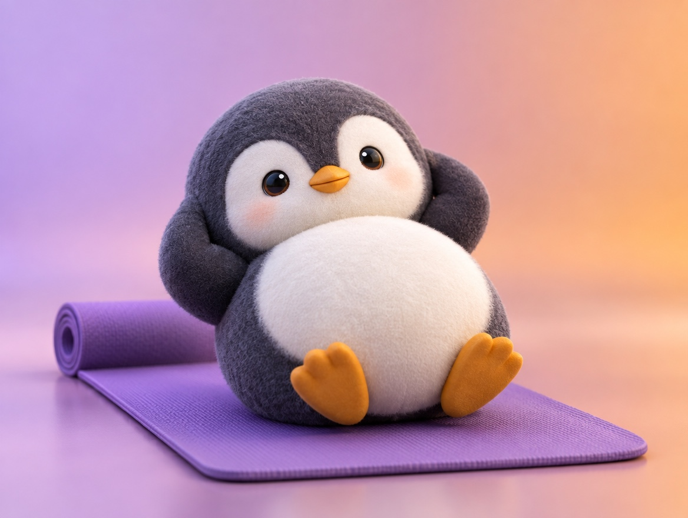

📝 DRAFT · 下書き — まだ本番に出していません · 下書き一覧
🐧 EVERYDAY LIFE⚡ 18 SEC
Quitting on day 3 is homeostasis, so notice it and do less 👾

Day 3 Quitting
The real reason you quit after 3 days is "homeostasis," a power to stay the same.
Body Guard
It works to protect your body, but it also pulls good changes back.
Notice It
When you think "I don't want to," notice it: "There you are, homeostasis!"
⚡ TRY IT
Day 3: beat homeostasis!
You started sit-ups. Day 1 and day 2 were OK. Now it is day 3…
🐧 "Hmm… I don't want to today…"
👾 "Hehe. Let's stay the same as before…"
💪 Tap fast! Homeostasis is pulling you back!
🔥 Day 3 cleared! The streak continues!
👾 "Hehe. Back to the sofa…"
HOMEOSTASIS
0 / 5⏱️ 8
🔥 You did it! Small is fine. Day 3 is a flower stamp.
😲 Wow, you did all 50! But on hard days, 5 is fine too.
👾 Homeostasis pulled you back. 50 is too much today. Try 5!
👾 So close! Homeostasis is strong today. Try again!
Do Less
Then keep going, even if you cut 50 sit-ups down to 5.
📚 I learned this from the Japanese blog "Panda no Ondo".